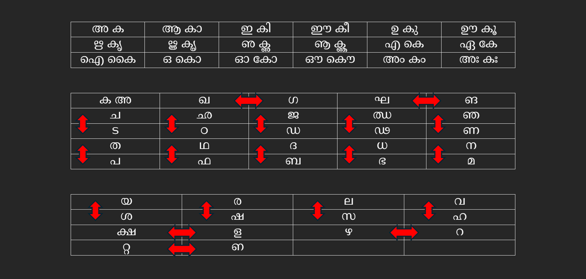
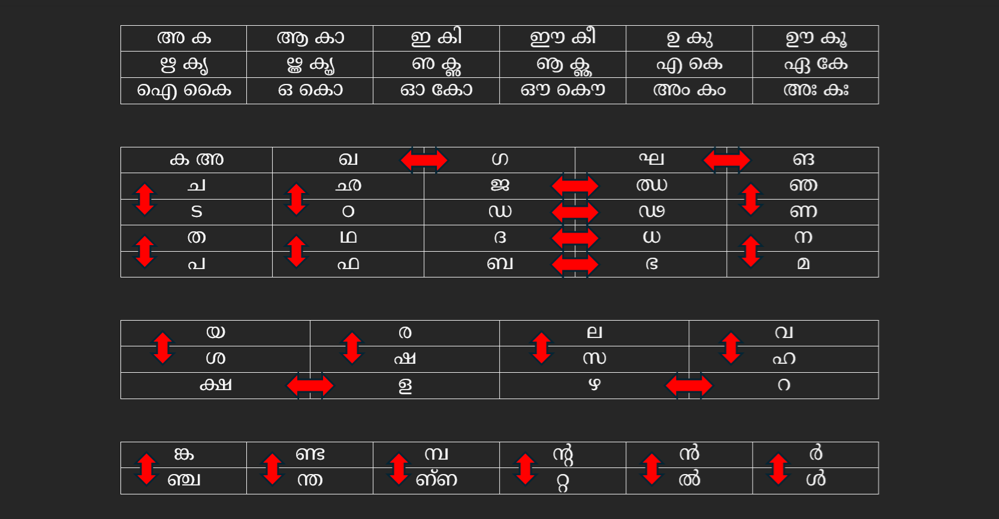

മലയാളത്തിലെ മൂലഭദ്രി എന്നൊരു സബ്സ്റ്റിറ്റൂഷൻ സിഫർ രഹസ്യഭാഷയെപ്പറ്റി മിക്കവരും കേട്ടിട്ടുണ്ടായിരിക്കും. അതിൻ്റെ ചരിത്രത്തെക്കുറിച്ചും ലഭ്യമായ രണ്ട് വെർഷനുകളെക്കുറിച്ചും അല്പം വിശദമാക്കാം.
സംസ്കൃതഭാഷയിലെ മൂലദേവീയം അഥവാ ഗൂഢാലേഖ്യം എന്ന സിഫറിൽനിന്നാണ് മൂലഭദ്രിയുടെ ഉദ്ഭവം. ഇതിനെപ്പറ്റി നമുക്ക് ലഭ്യമായ ഏറ്റവും പുരാതനമായ സ്രോതസ് വാത്സ്യായനൻ്റെ കാമസൂത്രത്തിന് യശോധരൻ 13-ാം നൂറ്റാണ്ടിൽ രചിച്ച ജയമംഗളം എന്ന വ്യാഖ്യാനമാണ്. മൂലദേവീയത്തിൻ്റെ നിയമങ്ങൾ ഇപ്രകാരം: അ - ക, ഖ - ഗ, ഘ - ങ എന്നീ ജോടികൾ തമ്മിലും, കൂടാതെ ച വർഗം - ട വർഗം, ത വർഗം - പ വർഗം, അന്തസ്ഥങ്ങൾ (യ ര ല വ) - ഊഷ്മാക്കൾ (ശ ഷ സ ഹ) എന്നിവ തമ്മിൽ അക്ഷരമാലയിൽ മുകളിലും താഴെയുമായി വരുന്ന ക്രമത്തിലും മാറ്റി ഉപയോഗിക്കുക (ച - ട, ഛ - ഠ, എന്നിങ്ങനെ).
(സംസ്കൃതത്തിൽ സംഗതി എളുപ്പം കഴിഞ്ഞു. അതിൽ ള, ഴ, റ എന്നീ അക്ഷരങ്ങളും ചില്ലക്ഷരങ്ങളും ഇല്ലല്ലോ?)
ആദ്യം പറഞ്ഞ മൂന്ന് അക്ഷരങ്ങൾ കൂടി കൂട്ടിച്ചേർത്ത് ആരോ രൂപം നൽകിയതായിരിക്കണം മലയാളത്തിൽ മൂലഭദ്രിയുടെ ആദ്യം ഉണ്ടായ വെർഷൻ എന്ന് അനുമാനിക്കാം. അതിൻ്റെ നെമോണിൿ ശ്ലോകം ഇങ്ങനെ:
"അകോ ഖഗോ ഘങശ്ചൈവ
ചടോ ഞണ തപോ നമ
യശോ രഷോ ലസശ്ചൈവ
വഹ ക്ഷള ഴറ റ്റഩ."
(ഒടുവിൽ കാണുന്ന "ഩ" എന്ന സാധനം "പന"യിലെ "ന" ശബ്ദത്തെ സൂചിപ്പിക്കാൻ മലയാളത്തിൽ ഉപയോഗിച്ചിരുന്നതും ഇപ്പോൾ ലുപ്തപ്രചാരമായതുമായ ഒരു അക്ഷരമാണ്. ഗൂഗ്ൾ ട്രാൻസ്ലിറ്ററേഷനിൽ "മൊഴി" സ്കീം ഉപയോഗിച്ച് "na#" എന്ന് ടൈപ് ചെയ്താൽ ഈ അക്ഷരം കിട്ടും.)
ഈ സ്കീം പ്രകാരമുള്ള അക്ഷരജോടികളുടെ പട്ടിക:

സി.വി.യുടെ "മാർത്താണ്ഡവർമ" നോവലിലെ അഞ്ചാം അദ്ധ്യായത്തിൽ മഹാരാജാവും പരമേശ്വരൻപിള്ളയും തമ്മിൽ സംസാരിക്കുന്നത് മൂലഭദ്രിയുടെ ഈ രൂപം ഉപയോഗിച്ചാണ്; അതിനാലാണ് "ധൃതി" എന്ന വാക്ക് "ഭൃപി" എന്നാകുന്നത്.
ഇനിയാണ് കളി. യശോധരൻ ത, പ വർഗങ്ങളിലെ എല്ലാ അക്ഷരജോടികളും എടുത്തെടുത്ത് പറഞ്ഞില്ല. ച - ട, ത - പ, എന്നു മാത്രമേ സൂചിപ്പിച്ചുള്ളൂ. ബാക്കിയുള്ളവ വായനക്കാർ യുക്തികൊണ്ട് ഊഹിച്ചുകൊള്ളണം എന്ന ഉദ്ദേശ്യത്തിലാവാം. പക്ഷേ അതുകൊണ്ട് തന്നെ ശേഷിച്ച അക്ഷരങ്ങൾ എങ്ങനെ പരസ്പരം വെച്ചുമാറണം എന്നതിൽ പ്രയോൿതാക്കൾക്ക് സ്വാതന്ത്ര്യത്തിന് ഇട വന്നു. (സംഗതിവശാൽ പറയട്ടെ: സോഫ്റ്റ്വേർ ഡെവലപ്മെൻ്റിൽ സാധാരണയായി ഇങ്ങനെയാണ് ഒരേ പ്രോടോകോളിൻ്റെ വ്യത്യസ്തമായ ഇംപ്ലിമെൻ്റേഷനുകൾ ഉണ്ടാകുന്നത്.) അങ്ങനെയായിരിക്കാം ഒരു പക്ഷേ മൂലഭദ്രിയുടെ ചില്ലക്ഷരങ്ങളും ഏതാനും കൂട്ടക്ഷരങ്ങളും ഉൾക്കൊള്ളുന്ന ഒരു എക്സ്റ്റെൻഡഡ് വെർഷൻ ഉരുത്തിരിഞ്ഞത്. അതിൻ്റെ നെമോണിൿ ഇപ്രകാരം:
"അകോ ഖഗോ ഘങശ്ചൈവ
ചടോ ഞണ തപോ നമ
ജഝോ ഡഢോ ദധശ്ചൈവ
ബഭോ ഥഫ ഛഠേതി ച
യശോ രഷോ ലസശ്ചൈവ
വഹ ക്ഷള ഴറ ക്രമാൽ
ങ്കഞ്ച ണ്ടന്ത മ്പഩ്ഩ ൻ്ററ്റ ൻൽ ർൾ."
ഈ സ്കീം പ്രകാരമുള്ള അക്ഷരജോടികളുടെ പട്ടിക:

(ഉള്ളൂർ അദ്ദേഹത്തിൻ്റെ കേരളസാഹിത്യചരിത്രത്തിൽ പരാമർശിച്ചിട്ടുള്ള വെർഷൻ ഇതാണ്.)
എൻ്റെ വെബ്പേജിൽ ഈ രണ്ട് സ്കീമുകളും നിങ്ങൾക്ക് പരീക്ഷിച്ചു നോക്കാൻ കഴിയും. ആദ്യത്തേതിൽ ചില്ലക്ഷരങ്ങൾ ഇല്ലാത്തതിനാൽ ("ൺ" രണ്ടാമത്തേതിലും ഇല്ലെന്നത് ശ്രദ്ധിക്കുക) ഡീക്രിപ്ഷൻ ഇത്തിരി ചളമാകേണ്ടതാണ്. പക്ഷേ അങ്ങനെ സംഭവിക്കുന്നത് ഒഴിവാക്കാൻ വേണ്ടി ഞാൻ ചെറിയൊരു ട്രിൿ ഉപയോഗിച്ചിട്ടുണ്ട്. അതിൻ്റെ വിശദാംശങ്ങളിലേക്കു കടന്ന് ബോറടിപ്പിക്കുന്നില്ല. പ്രോഗ്രാമിങ്ങിൽ താത്പര്യവും മലയാളം യുണികോഡിൻ്റെ ശൈശവദശയിൽ ആറ്റൊമിൿ ചില്ലുകളെപ്പറ്റി ഉണ്ടായ വാദപ്രതിവാദങ്ങളും ഒക്കെ അറിയാവുന്നവർക്ക് സോഴ്സ് കോഡ് നോക്കിയാൽ സംഗതി പിടികിട്ടും.